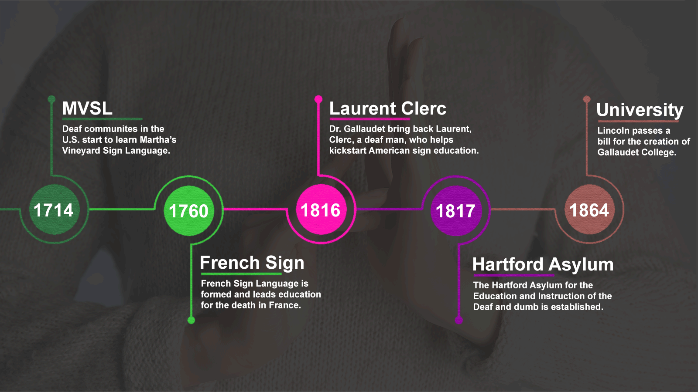
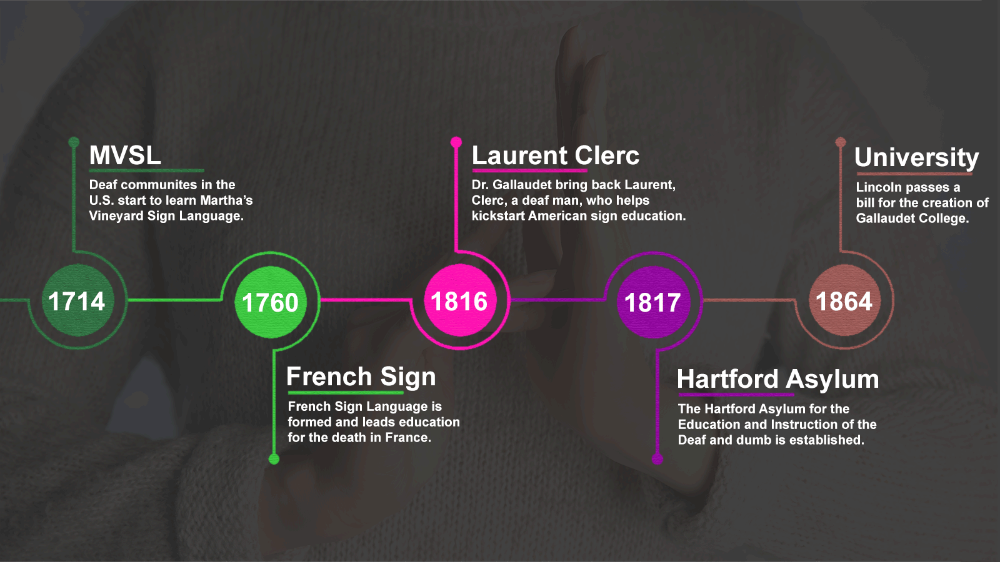

The Hearing .in
Sign Language is a visual language that uses gestures, facial expressions, and body movements to communicate, especially for the deaf and hard-of-hearing communities. It serves as a bridge for effective communication and cultural exchange.
By leveraging AI and machine learning, we are developing tools to enhance accessibility and break down communication barriers for these communities. To learn more about Sign Language, check out the video below:
We are working on a product that features both voice-to-sign and sign-to-voice capabilities for users. We are using machine learning models to achieve this and are still in the development process.
We are developing an innovative product that enables seamless communication between the deaf and hearing communities through both voice-to-sign and sign-to-voice capabilities. Our system is designed to bridge the gap by converting spoken language into sign language and vice versa, ensuring accessibility and inclusivity for everyone
Here's a sneak peek at some of the sign language gestures we're working with:
Our vision is to create a world where communication barriers are eliminated for the deaf and hard-of-hearing communities. By leveraging AI and machine learning, we aim to build tools that empower individuals to connect seamlessly, fostering inclusivity and accessibility in every interaction.
We envision a future where sign language is universally understood and effortlessly translated, enabling real-time communication between the deaf and hearing communities.
Sign Language is more than just a communication tool—it’s a cultural cornerstone for the deaf community. It fosters inclusion, preserves identity, and enables meaningful interactions in a world that often overlooks accessibility.
A Language of Identity: Sign language is deeply rooted in the deaf community’s culture and history. It is not merely a visual representation of spoken words but a fully developed language with its own grammar, syntax, and regional variations.
Fostering Inclusion: By embracing sign language, we create a world where everyone is heard and understood. It ensures that the deaf community can participate equally in education, employment, healthcare, and social interactions without barriers.
American Sign Language (ASL) is at the heart of our project, The Hearing .in. As a rich and expressive visual language, ASL empowers millions of deaf and hard-of-hearing individuals in the United States and beyond to communicate effectively. It uses hand gestures, facial expressions, and body movements to convey meaning, fostering a deep sense of community and cultural identity.
Our project leverages ASL to bridge communication gaps through innovative AI-driven tools. By converting voice to ASL gestures and vice versa, we aim to make conversations more accessible and inclusive for everyone. Whether you're learning ASL or using it daily, our platform is designed to support seamless interaction, education, and connection.
 
